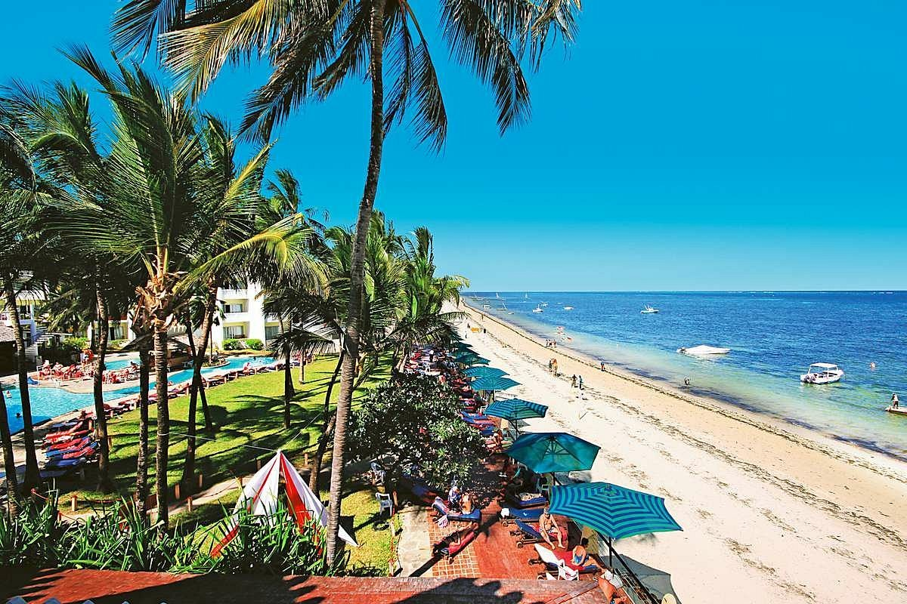
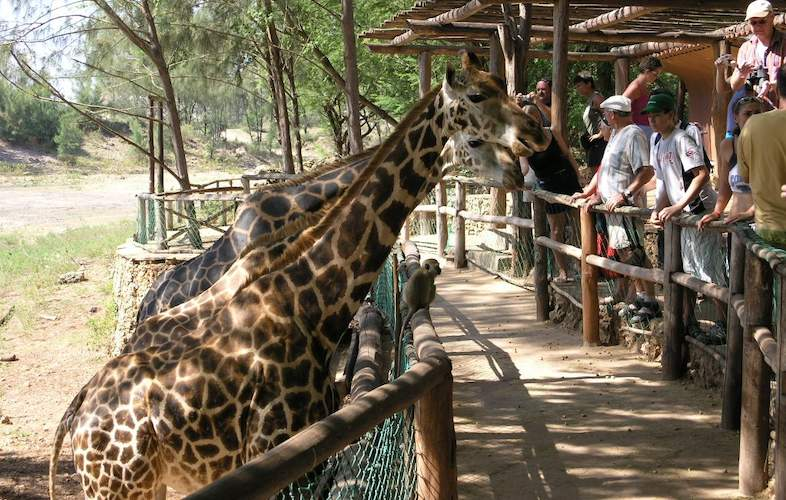

Mombasa is famous for its beautiful beaches, such as Bamburi Beach, Shanzu Beach, and Diani Beach. These beaches are perfect for swimming, sunbathing, and watersports.

Mombasa Old Town: This historic town is a UNESCO World Heritage Site and is full of narrow streets, old buildings, and mosques. You can also visit Fort Jesus, a 16th-century Portuguese fort that is now a museum.

This nature park was created by a conservationist and is home to a variety of animals, including giraffes, zebras, and lions. You can also take a boat ride on the park's lake.